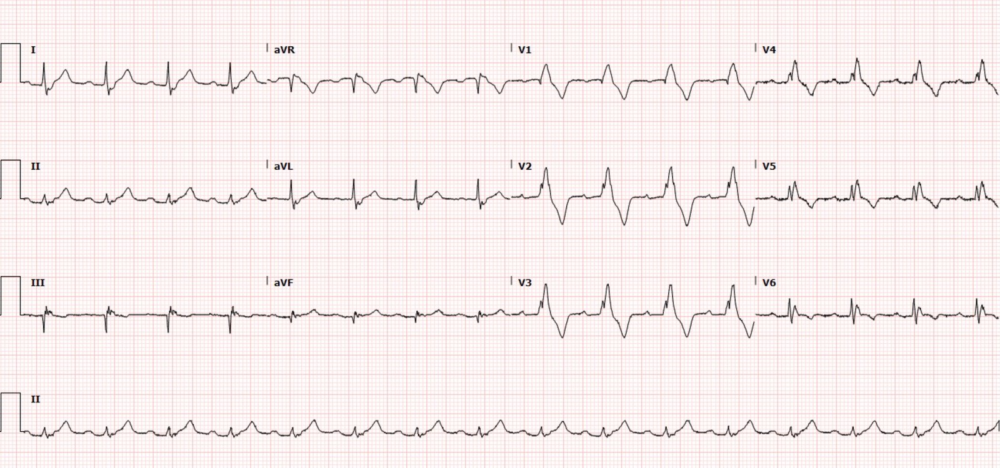
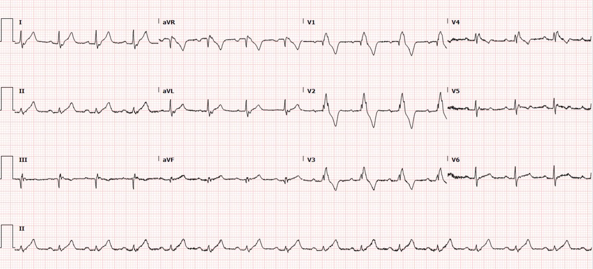
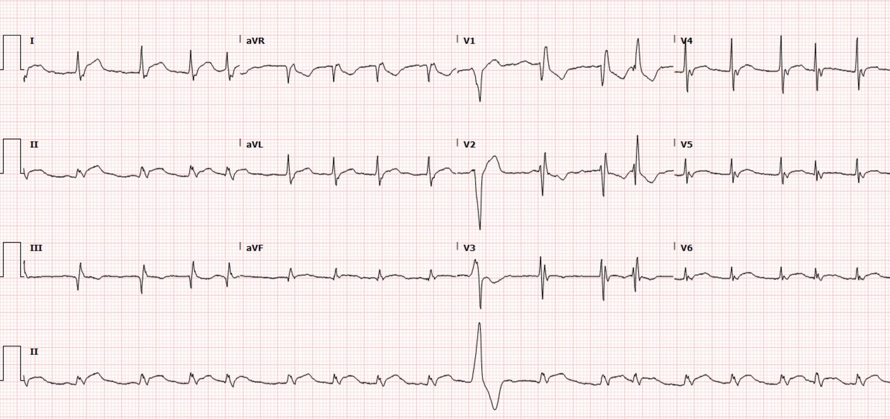
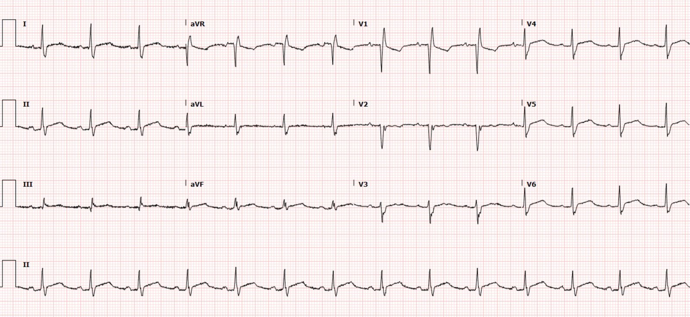
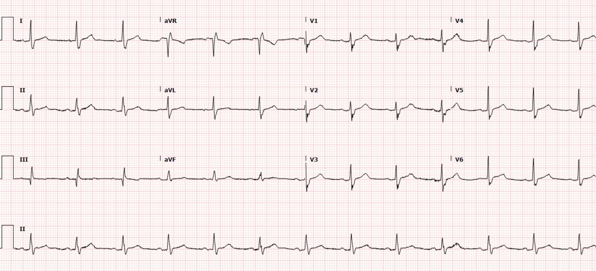
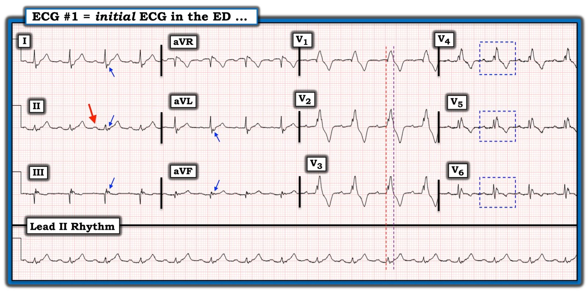
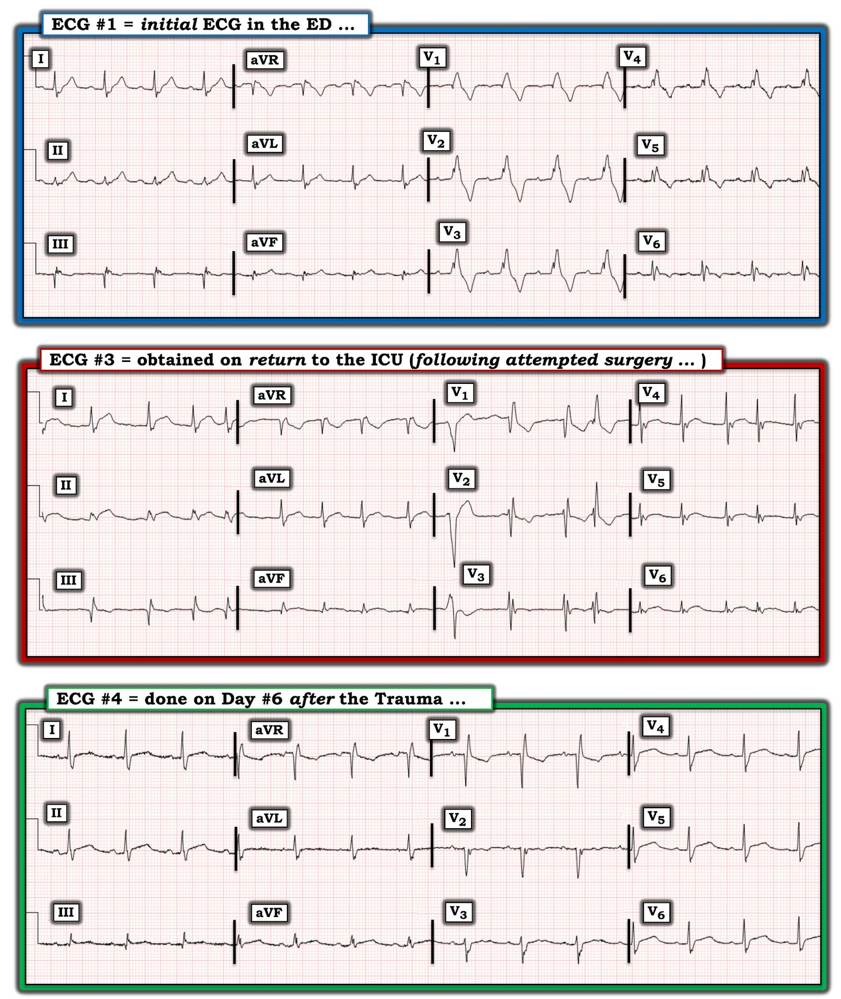

06/08/2022 — Một người đàn ông ở độ tuổi 40 bị đa chấn thương do tai nạn xe cơ giới
Bản dịch tiếng Việt của bài "A man in his 40s with multitrauma from motor vehicle collision" – Dr. Smith’s ECG Blog. Giữ nguyên toàn bộ 8 hình ảnh của bản gốc.
Bài gửi và viết bởi Andrew Yde MD, được bình duyệt bởi Meyers, Grauer, Smith
Một người đàn ông ở độ tuổi 40 đến viện sau một tai nạn xe cơ giới, trong đó anh là người lái không thắt dây an toàn của một chiếc xe đang chạy với tốc độ cao. Đội cấp cứu ngoài viện (EMS) phát hiện bệnh nhân lơ mơ tại hiện trường tai nạn và đã đặt nội khí quản ngay tại hiện trường. Khi đánh giá ban đầu tại khoa cấp cứu (ED), bệnh nhân bị tụt huyết áp và nhịp tim nhanh, kèm nhiều chấn thương chỉnh hình rõ ràng. Bệnh nhân được truyền máu cấp cứu và đặt dẫn lưu màng phổi hai bên. Siêu âm FAST không kết luận được, nhưng không thấy lượng lớn dịch tự do. Bệnh nhân được đánh giá là đủ ổn định để chụp CT.
Chụp CT phát hiện các tổn thương sau: tràn máu-tràn khí màng phổi trái, tràn khí màng phổi phải, tràn khí trung thất, gãy xương ức, gãy cung trước các xương sườn phải 2-6, mảng sườn di động bên trái gồm các xương sườn 2-9, gãy mỏm ngang L2, gãy xương đòn trái, rách gan độ 1-2 và rách lách độ 1. Bệnh nhân được nhập đơn vị hồi sức tích cực (ICU) ngoại chấn thương.
Đêm đó, bệnh nhân có nhiều cơn ngoại tâm thu (ectopy), và những gì trông giống nhịp nhanh thất không bền bỉ (NSVT). Điện giải trong giới hạn bình thường, và điện tâm đồ sau đây được ghi:


Bệnh nhân không có điện tâm đồ cũ nào trong hệ thống để so sánh. Điện tâm đồ cho thấy nhịp xoang kèm blốc nhánh phải (RBBB). ST chênh xuống (STD) và sóng T đi sau RBBB ở V1-V3 có hình thái bất thường và có thể ngược hướng quá mức so với RBBB thông thường. Ngoài ra, các chuyển đạo trước tim bên cũng bất thường ở chỗ chúng vẫn còn sóng R’, thay vì sóng S trát đậm như ta thấy ở I và aVL, gợi ý rằng các điện cực ngực bên bị đặt lệch vào phía trong (có lẽ do ống dẫn lưu màng phổi trái đang lưu).
Nghi ngờ đụng dập tim (cardiac contusion). Hãy nhớ: những khả năng quan trọng khác cần cân nhắc khi có thay đổi điện tâm đồ trong bối cảnh chấn thương bao gồm bóc tách hoặc rách động mạch vành do chấn thương.
Xét nghiệm troponin được chỉ định, cùng với một điện tâm đồ ghi lại, xem dưới đây.


Troponin I độ nhạy cao (bình thường dưới 20 ng/L) có kết quả 20,973 ng/L, và bác sĩ tim mạch được mời hội chẩn. Bác sĩ tim mạch đề nghị siêu âm tim và theo dõi diễn biến troponin, cho biết nhận định ban đầu của họ là đụng dập tim.
Troponin lặp lại qua đêm đến sáng hôm sau là ＞25,000 ng/L (phòng xét nghiệm không báo các giá trị cao hơn).
Vào thời điểm này, đã có siêu âm tim chính thức, cho thấy phân suất tống máu thất trái (LVEF) bình thường, với thất phải giảm động nặng. Các dấu hiệu này được nhận định là phù hợp với đụng dập tim. Bác sĩ tim mạch tiếp tục theo dõi, nhưng không thấy cần thiết phải thông tim. Bác sĩ tim mạch đồng ý cho bệnh nhân phẫu thuật cố định xương sườn bằng nẹp vít.
Sau khi khởi mê trong phòng mổ, trong lúc chờ cố định xương sườn bằng nẹp vít, bệnh nhân có một loạt nhịp được cho là nhịp nhanh thất không bền bỉ (NSVT), dù dải nhịp theo dõi từ xa (telemetry) này không có để xem lại. Sau đó bệnh nhân chuyển sang rối loạn nhịp chậm, và cuộc mổ bị hủy bỏ. Khi trở lại ICU, điện tâm đồ dưới đây được ghi, cho thấy rung nhĩ kèm một PVC.


Troponin đã bắt đầu giảm đáng kể, xuống còn 2,243 ng/L vào ngày nằm viện thứ 3.
Siêu âm tim lặp lại cho thấy không có rối loạn vận động thành thất trái và EF bình thường, nhưng RVEF giảm và vô động thành tự do thất phải từ giữa thất đến mỏm, kèm lớn hai nhĩ. Bệnh nhân được truyền amiodarone liên tục và cuối cùng đã chuyển về nhịp xoang. Bệnh nhân vẫn ổn định huyết động.
Các điện tâm đồ tiếp theo được ghi vào ngày 6 và ngày 9, dưới đây:




Các điện tâm đồ này cho thấy RBBB hồi phục dần và các thay đổi ST đáng lo ngại trước đó cải thiện đáng kể.
Phần còn lại của quá trình nằm viện của bệnh nhân có nhiều biến chứng. Cuối cùng bệnh nhân được xuất viện chuyển sang cơ sở phục hồi chức năng sau khoảng một tháng nằm viện.
Xem các ca đụng dập cơ tim khác của chúng tôi và các ca liên quan (một số ca có chẩn đoán quan trọng KHÁC VỚI đụng dập cơ tim!):
A Child with Blunt Trauma (Một trẻ bị chấn thương kín) — Xem điện tâm đồ có thể khẳng định đụng dập cơ tim nhưng lại kín đáo như thế nào, và điều gì xảy ra nếu bạn bỏ sót.
Massive Transfusion for Motorcycle Collision with Hemorrhage, Troponin Elevated. (Truyền máu khối lượng lớn do tai nạn xe máy có xuất huyết, troponin tăng.)
ECG of pneumopericardium and probable myocardial contusion shows typical pericarditis (Điện tâm đồ của tràn khí màng ngoài tim và nhiều khả năng đụng dập cơ tim cho thấy hình ảnh viêm màng ngoài tim điển hình)
Male in 30’s, 2 days after Motor Vehicle Collsion, complains of Chest Pain and Dyspnea (Nam giới ở độ tuổi ba mươi, hai ngày sau tai nạn xe cơ giới, than đau ngực và khó thở)
Head On Motor Vehicle Collision. ST depression. Myocardial Contusion? (Tai nạn xe cơ giới đâm trực diện. ST chênh xuống. Đụng dập cơ tim?)
Gunshot wound to the chest with ST Elevation (Vết thương ngực do đạn bắn kèm ST chênh lên)
Would your radiologist make this diagnosis, or should you record an ECG in trauma? (Bác sĩ chẩn đoán hình ảnh của bạn có đưa ra chẩn đoán này không, hay bạn nên ghi điện tâm đồ trong chấn thương?)
Blunt Trauma in a Child (Chấn thương kín ở trẻ em)
40-something male in a head-on Motor Vehicle Collision and Splenic Injury (Nam giới bốn mươi mấy tuổi bị tai nạn xe cơ giới đâm trực diện và tổn thương lách)
Bàn luận
Đây là một ca mà bối cảnh lâm sàng có tầm quan trọng sống còn, vì các biểu hiện điện tâm đồ của đụng dập tim khá khó dự đoán. Xuất huyết trong cơ tim, phù nề và hoại tử tế bào cơ tim là các đặc điểm của đụng dập tim. Tất cả những tổn thương này đều gây tăng troponin, khiến troponin trở thành một dấu ấn rất đặc hiệu cho tổn thương tim. Có ý kiến cho rằng troponin nằm trong khoảng tham chiếu bình thường vào khoảng 4-6 giờ sau sự kiện khởi phát gợi ý mạnh mẽ không có tổn thương tim trong chấn thương ngực kín (Sybrandy).
Điện tâm đồ nhìn chung không nhạy đối với đụng dập tim. Thất phải chiếm phần lớn mặt trước của tim, là phần dễ bị tổn thương trực tiếp nhất trong chấn thương ngực kín. Đụng dập tim có thể biểu hiện trên điện tâm đồ theo nhiều cách, bao gồm: đoạn ST chênh lên hoặc chênh xuống, QT kéo dài, sóng Q mới, rối loạn dẫn truyền như RBBB, blốc phân nhánh, rối loạn dẫn truyền nút nhĩ thất (AV) (blốc AV độ 1,2 và 3), và các rối loạn nhịp như nhịp nhanh xoang, ngoại tâm thu nhĩ và thất, rung nhĩ, nhịp nhanh thất, rung thất, nhịp chậm xoang và nhịp nhanh nhĩ (Sybrandy). RBBB trong chấn thương ngực kín dường như là dấu hiệu chỉ điểm tổn thương thất phải nặng. Rung nhĩ cũng là yếu tố dự báo kết cục xấu hơn trong bối cảnh này (Alborzi).
Xem các công bố này để biết thêm thông tin
Nhìn chung, xử trí đụng dập tim chủ yếu là điều trị hỗ trợ, trừ khi xuất hiện biến chứng cần phẫu thuật, bao gồm điều trị thích hợp các rối loạn nhịp và tình trạng mất ổn định huyết động. Rốt cuộc, điện tâm đồ bình thường và troponin bình thường lúc 4-6 giờ kể từ sự cố chấn thương ban đầu có giá trị tiên đoán cao rằng sẽ không có biến chứng tim về sau trong chấn thương ngực kín. Khoảng 81-95% các rối loạn nhịp thất đe dọa tính mạng và suy tim cấp xảy ra trong vòng 24-48 giờ nằm viện. Cần theo dõi diễn biến troponin và điện tâm đồ cho đến khi trở về bình thường (Sybrandy).
Vỡ tim muộn là một hậu quả có thể xảy ra, đặc biệt nếu có bất kỳ ST chênh lên nào. Xem ca này, ca này và ca này. Ở những bệnh nhân có nguy cơ, nên hạn chế hoạt động thể lực trong vài tháng sau chấn thương.
Tài liệu tham khảo
Alborzi, Z., Zangouri, V., Paydar, S., Ghahramani, Z., Shafa, M., Ziaeian, B., Radpey, M. R., Amirian, A., & Khodaei, S. (2016, ngày 13 tháng Tư). Diagnosing myocardial contusion after blunt chest trauma. The journal of Tehran Heart Center. Truy cập ngày 2 tháng Bảy năm 2022, từ https://www.ncbi.nlm.nih.gov/pmc/articles/PMC5027160/
Moyé, D. M., Danielle M. Moyé thuộc Khoa Tim mạch (From the Division of Cardiology), Dyer, A. K., Adrian K. Dyer thuộc Khoa Tim mạch, Thankavel, P. P., Poonam P. Thankavel thuộc Khoa Tim mạch, & Dữ liệu bổ sung có tại http://circimaging.ahajournals.org/lookup/suppl/doi:10.1161/CIRCIMAGING.114.002857/-/DC1. Thư liên hệ gửi Poonam Punjwani Thankavel. (2015, ngày 1 tháng Ba). Myocardial contusion in an 8-year-old boy. Circulation: Cardiovascular Imaging. Truy cập ngày 2 tháng Bảy năm 2022, từ https://www.ahajournals.org/doi/10.1161/CIRCIMAGING.114.002857
Sybrandy, K. C., Cramer, M. J. M., & Burgersdijk, C. (2003, tháng Năm). Diagnosing cardiac contusion: Old Wisdom and new insights. Heart (British Cardiac Society). Truy cập ngày 2 tháng Bảy năm 2022, từ https://www.ncbi.nlm.nih.gov/pmc/articles/PMC1767619/

===================================
BÌNH LUẬN CỦA TÔI, bởi KEN GRAUER, MD (6/8/2022):
===================================
Bài tổng quan xuất sắc của BS. Yde và Meyers — về đa chấn thương dẫn đến Đụng dập tim! Tôi tập trung bình luận của mình vào một số khía cạnh cụ thể bổ sung của các điện tâm đồ liên tiếp được ghi trong ca hôm nay.
Như BS. Yde và Meyers đã nêu — điện tâm đồ có độ nhạy kém hơn mức tối ưu trong phát hiện tổn thương tim sau chấn thương kín. Lý do là vị trí giải phẫu ở phía trước của RV (Right Ventricle – thất phải), và việc nó nằm ngay sát xương ức — khiến RV dễ bị tổn thương do chấn thương kín hơn nhiều so với LV. Nhưng do khối lượng điện của LV lớn hơn nhiều — hoạt động điện (và do đó cả các bất thường điện tâm đồ) xuất phát từ RV nhỏ hơn và mỏng hơn nhiều sẽ khó phát hiện hơn. ÔN TẬP (Sybrandy và cs.: Heart 89:485-489, 2003 — Alborzi và cs.: J The Univ Heart Ctr 11:49-54, 2016 — và Valle-Alonso và cs.: Rev Med Hosp Gen Méx 81:41-46, 2018) — các dấu hiệu điện tâm đồ thường được báo cáo liên quan đến Đụng dập tim bao gồm:
- Không có gì (tức là, Điện tâm đồ có thể bình thường — do đó việc không thấy bất thường nào trên điện tâm đồ không loại trừ khả năng đụng dập tim).
- Nhịp nhanh xoang (thường gặp ở bất kỳ bệnh nhân chấn thương nào …).
- Các rối loạn nhịp khác (PAC, PVC, AFib, nhịp chậm và rối loạn dẫn truyền AV — VT/VFib có thể gây tử vong).
- RBBB (là rối loạn dẫn truyền thường gặp nhất, vượt xa các loại khác — do vị trí giải phẫu dễ bị tổn thương hơn của RV). Blốc phân nhánh và LBBB ít gặp hơn.
- Dấu hiệu Tổn thương cơ tim (tức là, sóng Q, ST chênh lên và/hoặc chênh xuống — các dấu hiệu này gợi ý có tổn thương LV).
- QTc kéo dài.
- LƯU Ý: Việc dự đoán “mức độ nặng” của đụng dập tim dựa trên các rối loạn nhịp tim và dấu hiệu điện tâm đồ — là một khoa học chưa hoàn hảo.
Những điểm MẤU CHỐT bổ sung:
Mặc dù tổn thương chủ yếu xảy ra ở RV (chứ không phải LV) — việc dùng chuyển đạo V4R bên phải chưa được chứng minh là hữu ích so với dùng điện tâm đồ 12 chuyển đạo chuẩn trong phát hiện các bất thường điện tâm đồ.
- Ngoài các bất thường điện tâm đồ liên quan đến bản thân chấn thương kín gây đụng dập tim — Hãy nhớ đến khả năng có các dạng tổn thương tim khác ở những bệnh nhân này (tức là, tổn thương van tim, bóc tách động mạch chủ, thủng vách) — cũng như khả năng có một biến cố tim nguyên phát (tức là, nhồi máu cơ tim cấp có thể là nguyên nhân gây ra vụ tai nạn dẫn đến chấn thương).
- Các bất thường điện tâm đồ có thể xuất hiện muộn — vì vậy việc ghi lại điện tâm đồ nếu bản ghi thứ 1 bình thường là phù hợp khi lo ngại có chấn thương nặng.
- Dù vậy (như BS. Yde và Meyers đã nêu) — NẾU troponin bình thường lúc 4-6 giờ và NẾU điện tâm đồ bình thường — thì nguy cơ biến chứng tim là cực kỳ thấp.
BẠN đã đọc điện tâm đồ đầu tiên như thế nào?
Tôi thấy điện tâm đồ đầu tiên trong ca hôm nay cực kỳ thú vị. Rõ ràng, bệnh nhân đa chấn thương nặng sau tai nạn xe cơ giới này đã bị đụng dập tim — được xác nhận bởi sự hiện diện của các bất thường điện tâm đồ rõ ràng và troponin tăng rất cao.
- Mặc dù y văn thừa nhận khó khăn khi cố gắng dự đoán “mức độ nặng” của đụng dập tim từ các dấu hiệu điện tâm đồ — vẫn có một số bất thường điện tâm đồ đáng lo ngại hiện diện trong bản ghi đầu tiên (Hình 1).


SUY NGHĨ CỦA TÔI về điện tâm đồ đầu tiên:
- Nhịp trong điện tâm đồ #1 là nhịp xoang (mũi tên ĐỎ ở chuyển đạo II) — với tần số ~90/phút.
- Khoảng PR có vẻ kéo dài nhẹ (đặc biệt khi xét đến tần số tương đối nhanh). Trong số các rối loạn dẫn truyền gặp trong đụng dập tim có blốc AV độ 1.
- Phức bộ QRS giãn rộng — và dạng qR rộng chiếm ưu thế ở chuyển đạo V1, kết hợp với sóng S tận rộng ở chuyển đạo I — là chẩn đoán RBBB (Right Bundle Branch Block – blốc nhánh phải).
- LƯU Ý: Điện tâm đồ ở Hình 1 là một ví dụ tuyệt vời cho thấy độ rộng QRS có thể thay đổi tùy theo chuyển đạo đang được xem xét. Tôi đã thêm các đường thời gian thẳng đứng để làm rõ điểm bắt đầu và kết thúc của phức bộ QRS (lần lượt là các đường chấm ĐỎ và TÍM). Mặc dù QRS giãn rộng rõ ràng — Hãy chú ý QRS trông hẹp như thế nào ở chuyển đạo II được ghi đồng thời, do phần lớn phần cuối của QRS ở chuyển đạo này nằm trên đường nền.
- QRS có vẻ rất rộng và phân mảnh ở các chuyển đạo V1,V2,V3. Mặc dù tôi không tìm thấy y văn ủng hộ việc coi mức độ giãn rộng này cùng hình thái QRS vô định hình là yếu tố tiên đoán mức độ nặng của đụng dập tim — tôi cho rằng việc quan sát thấy QRS hẹp dần qua các bản ghi liên tiếp, với sự trở lại hình thái RBBB ba pha bình thường hơn, đã củng cố mối lo ngại về bản ghi đầu tiên này.
- Bằng chứng bổ sung về các dấu hiệu điện tâm đồ bất thường ở Hình 1 thể hiện dưới dạng: i) Sóng Q sâu ở chuyển đạo III và aVF; ii) Sóng T nhọn quá mức (tối cấp?) ở các chuyển đạo I, II, aVL và aVF; và, iii) ST-T chênh xuống quá mức ở các chuyển đạo trước (rõ ràng vượt quá mức dự kiến với RBBB đơn thuần).
- BẠN có nhận thấy các chuyển đạo ngực bên không điển hình như thế nào đối với RBBB? (các phức bộ QRS nằm trong các hình chữ nhật chấm XANH). Thông thường với RBBB — các chuyển đạo ngực bên cho thấy sóng R dương kèm sóng S tận rộng — và không có sự tồn tại dai dẳng của các phức bộ ba pha có khía trông giống nhau kèm ST-T chênh xuống kéo dài. Tôi nghi ngờ lý do của hình thái QRST không điển hình này ở các chuyển đạo V4,V5,V6 — là vị trí đặt điện cực đã phải thay đổi ở bệnh nhân có chấn thương nhiều vùng lồng ngực này, cần đặt dẫn lưu màng phổi, nẹp cố định, băng gạc, v.v. LƯU Ý: Tầm quan trọng của việc nhận ra hình thái RBBB không điển hình này nằm ở ảnh hưởng tiềm tàng của nó khi so sánh các điện tâm đồ liên tiếp.
- BẠN có nhận thấy các sóng J (? sóng Osborn) nổi bật ở các chuyển đạo thành dưới? Cũng có khía âm nổi bật ở chuyển đạo I và aVL (mũi tên XANH ở các chuyển đạo chi). Trước đây chúng tôi đã lưu ý rằng những sóng J nổi bật như vậy có thể gặp không chỉ trong hạ thân nhiệt — mà còn trong các tình trạng khác, bao gồm thiếu máu cục bộ cơ tim — và rằng sóng J do thiếu máu cục bộ đã được chứng minh là làm tăng nguy cơ xuất hiện rối loạn nhịp thất ác tính (Xem Bình luận của tôi trong bài đăng ngày 23 tháng Chín năm 2020 của Dr. Smith’s ECG Blog).
- Sóng J cũng đã được chứng minh là dấu hiệu chỉ điểm nguy cơ tăng đáng kể sau chấn thương tim xuyên thấu (Nicol và Navsaria: J Injury 45:112-115, 2014).
- Bất kể bạn gọi các sóng lệch này là sóng J nổi bật hay sóng Osborn — tôi thấy điều “đáng chú ý” là các sóng lệch này hiện diện ở cả 2 điện tâm đồ đầu tiên được ghi trong ca hôm nay — rằng một cơn VT được cho là, sau đó là nhịp chậm đáng kể, đã xảy ra ngay sau đó trong phòng mổ — nhưng các sóng lệch ở điểm J này không còn thấy trong 3 điện tâm đồ cuối cùng (được ghi sau khi các rối loạn nhịp đe dọa tính mạng đó đã hết).
Điều gì đã xảy ra trên các điện tâm đồ liên tiếp?
Tôi đã chọn 3 trong số 5 điện tâm đồ của ca hôm nay nhằm làm nổi bật diễn tiến của các thay đổi điện tâm đồ xuất hiện trong quá trình nằm viện của bệnh nhân này (Hình 2).


SUY NGHĨ CỦA TÔI về các điện tâm đồ liên tiếp này:
Tôi thấy thú vị khi lần theo sự cải thiện dần các bất thường điện tâm đồ trong quá trình nằm viện của bệnh nhân này:
- Tôi đã bàn về các dấu hiệu đáng chú ý ở điện tâm đồ #1.
- Điện tâm đồ #3 — được ghi sau cơn VT được cho là và nhịp chậm rõ rệt khiến phải dừng cuộc mổ. So với điện tâm đồ #1, giờ đây có: i) AFib kèm một PVC; ii) QRS hẹp lại phần nào, với sự xuất hiện của phức bộ ba pha rõ hơn ở các chuyển đạo trước (giờ đây điển hình hơn nhiều cho hình thái RBBB); iii) ST-T chênh xuống ít hơn nhiều ở các chuyển đạo trước; iv) Xuất hiện ST chênh lên đáng kể ở chuyển đạo I và II (và ở mức độ ít hơn ở chuyển đạo aVL và aVF); v) Mất khía điểm J nổi bật từng thấy ở điện tâm đồ #1; và, vi) Thay đổi hình thái QRS ở các chuyển đạo ngực bên, có vẻ phù hợp hơn với rối loạn dẫn truyền RBBB (có lẽ là kết quả của việc đặt điện cực đúng vị trí hơn?).
- Điện tâm đồ #4 (ghi vào Ngày nằm viện #6) — Giờ đây có: i) Trở lại nhịp xoang bình thường với tần số chậm hơn; ii) QRS hẹp thêm — giờ phù hợp với hình ảnh RBBB không hoàn toàn; iii) Sóng Q ở chuyển đạo III giảm kích thước — và sóng Q ở aVF biến mất; và iv) Các bất thường ST-T tiếp tục cải thiện.
- TÓM LẠI: Mặc dù y văn không cung cấp cho chúng ta tiêu chuẩn điện tâm đồ cụ thể để đánh giá mức độ nặng của đụng dập tim — ca hôm nay thực sự cho thấy việc đối chiếu lâm sàng với các điện tâm đồ liên tiếp có thể xác nhận bệnh nhân đang hồi phục như thế nào. Tôi cho rằng điều có ý nghĩa là bệnh nhân đa chấn thương nặng này ban đầu có QRS cực kỳ rộng (với RBBB và hình thái QRS vô định hình) — rồi dần hẹp lại và mang hình thái RBBB rõ ràng hơn (cuối cùng rối loạn dẫn truyền biến mất). Trong quá trình đó — bệnh nhân biểu hiện ST-T chênh lên và chênh xuống, sóng Q thay đổi kích thước, và một loạt thay đổi nhịp (VT, nhịp chậm, AFib, PVC) — rồi cuối cùng tất cả các dấu hiệu điện tâm đồ này đều cải thiện, tương ứng với quá trình hồi phục dần của bệnh nhân.